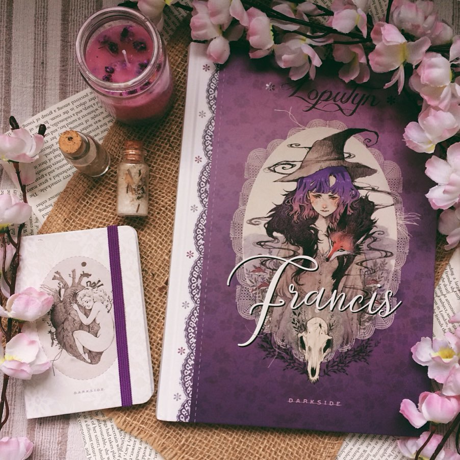

Fazem alguns anos que sou apaixonada na @loputyn e fiquei tão feliz quando soube que
a @darksidebooks iria
lan√ßar esse quadrinho. (üíñ) Sabia que viria numa edi√ß√£o linda, que faz jus ao trabalho encantador dela. Uma
obra
linda, encantadora e mágica. Fiquei admirando cada quadro de tão delicados que são. É uma fábula sobre quem,
bem
lá no fundo, somos. E quem podemos ser. ✨
{ps.: a cena da fogueira me lembra demais os encontros com minhas nenes üíñ}